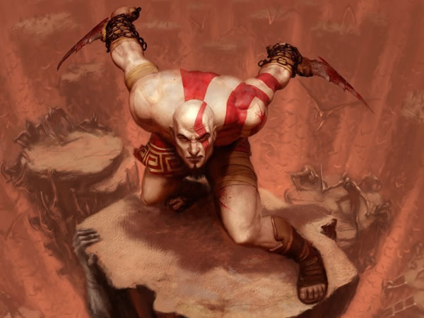

Forums galactiques > Taverne galactique : lieu de discussion informel > Le ring
Pages : 1 2 ... 14 15 16 ... 24 25
| lafouine Réputation à la taverne : 0  24/11 ETU 22:50 | Score : 0 Détails mais l'incantation de lafouine était faite pour que le marteau se divisent en 5 dès qu'il atteignait sa sible et qu'ils éxplosent comme un tirs ionique ou hatomique!!!(n'oublie pas les boules de feu,glace,foudre que je t'ais envoyé)
| ||
| Yoh Réputation à la taverne : 390  25/11 ETU 14:35 | Score : 0 Détails "Flans Exarmatio! Neutralisation par le Vent et les Fleurs!!"
Une bourrasque repoussa le marteau,l'envoyant hors de l'aire de combat. "Pfiou,j'ai bien fait de lancer une aria à retardement..." | ||
| rayzor63 Réputation à la taverne : 0  25/11 ETU 19:51 | Score : -9 Détails je suis god of wars je traduit pour les imbésiles "le dieu de la guerre" allor me faite pa chier !
| ||
| smileyoyo4 Réputation à la taverne : 664  25/11 ETU 20:34  | Score : 0 Détails Il est gentil ce commandant^^
Je propose qu'on lui mette un petit "message grossier" et que l'on clic tous sur le petit triangle Jaune en haut a droite de son message!!^^ | ||
| Beth le cerf blanc Réputation à la taverne : 112  25/11 ETU 20:36 | Score : 0 Détails "Mais tu peut compter sur moi smile!Comment va tu?il fait beau aujourd'hui"
Pour que Rayzor efface son compte tapez 1 pour qu'il parte d'apocalypsis tapez 2 pour qu'il s'en aille du jeu et qu'il ne revienne plus tapez 3 12312312312312312312312312312312131231323121213302321323 "Houhou." (Maintenant laissez le combat Yoh,Lafouine se derouler...) | ||
| lafouine Réputation à la taverne : 0 28/11 ETU 20:20 | Score : 0 Détails -bon là j'en avait marre de rester en pause!!!!!
| ||
| lafouine Réputation à la taverne : 0 28/11 ETU 20:24 | Score : 0 Détails lafouine se téléporta dérrière yoh lui tira des boules de feu et tapa yoh de toutes ses forces(il tapa avec son épée enflammée)
pui lafouine s'éloignie de yoh et tira une dizaine de flêches empoisonnée! (je te laisse répondre a mes coups) | ||
| Empereur Kenny Réputation à la taverne : 35  28/11 ETU 22:24 | Score : -1 Détails la petite bande a Kenny passa par là!
Lafouine qui se demanda se que s'était que ce foutoir pris Kenny pour cible... L'épée de La fouine passe à travers la tête de Kenny et répend une marre de sang à terre...Ensuite pour rettirer l'épée, Lafouine du s'aider du pied car la tete était coincer... Le combat fut tellement court durée que yoh n'a même pas eu le temps de s'approcher de lafouine pour l'attaquer!! La bande à l'empereur cria : OH MY GOD!! THEY'RE KILLED KENNY!! | ||
| lafouine Réputation à la taverne : 0 29/11 ETU 17:18 | Score : 0 Détails (tu n'a pas le droit de faire jouer les autre)
bon YOH reprenons notre combats (juste avant que empereure kenny nous fasse perdre du temps) | ||
| Yoh Réputation à la taverne : 390 29/11 ETU 17:35 | Score : 0 Détails Yoh encaissa de plein fouet.
Il cracha un filet de sang,mais fit volte-face et attrapa Lafouine. Un éclair illumina la paume du jeune homme. Il mit un coup de poing à Lafouine,et lança sa formule en étant toujours ne contact avec son adversaire... "Ras Tel Ma Scir Magister! Unus Fulgor Concidens Noctem,in Mea Manu Ens Inimicum Edat! Fulguratio Albicans! Qu'un rayon de lumière traverse les ténèbres et depuis ma main consume mes ennemis! Eclair Blanc!!" Une décharge éléctrique courut le long de son bras pour éléctrocuter son adversaire. | ||
| lafouine Réputation à la taverne : 0 30/11 ETU 19:41 | Score : 0 Détails -pauvre fou je sui le dieu des élément!!!!!hahahahahaha!!!!
lafouine tira une boule d'eau sur le bras de yoh afin qu'il s'éléctrocute! | ||
| lafouine Réputation à la taverne : 0 30/11 ETU 19:45 | Score : 0 Détails (j'oubliai)
lafouine toujours transformée en dragon senti un petit coup dans son ventre (ce qui ne lui fit rien) (je précise que le coup que le dragon a senti était ton coup de poing) | ||
| Yoh Réputation à la taverne : 390 01/12 ETU 13:54 | Score : 0 Détails "MIZUCHI!!"
Yoh dégaina son katana,et passa dans le dos de Lafouine en un instant. "Tu l'as entendu,n'est-ce pas?..." Une large blessure apparut sur le torse de Lafouine. "...Le bruit du vent divin." | ||
| lafouine Réputation à la taverne : 0 03/12 ETU 18:46 | Score : 0 Détails (hé!!!!!!!!! tu tes pas fais éléctrocuté!!!!! c'est pas juste l'éléctricité+eau=danger!!!!!)
bon! lafouine toucher par la catana cracha une goute de sang avant de se multiplier en 5 et de chargé sur YOH (les 5 lafouine chargent avec des énormes marteaux et épée!) | ||
| Yoh Réputation à la taverne : 390 04/12 ETU 16:24 | Score : 0 Détails "Inutile."
Un léger sourire passa sur les lèvres de Yoh. "Ras Tel Ma Scir Magister... Vertatur Tempestas Veris,Nobis Protectionem Aerialem... Flans Paries Venti Vertentis. Tourne,Tempête de Printemps,et que tes vents nous protègent. Vent et Fleurs,Barrière de Vent Tournants." Une tornade se forma autour de Yoh,repoussant l'attaque. Venant du cyclone,l'on entendit une seconde formule: "Ras Tel Ma Scir... Veniant Spiritus Aeriales,Obscursi,Lucis,Glacialis,Fulgurientes. Cum Fulgurationi Flet Tempestas Austrina. Jovis Tempestas Fulguriens. Esprits du Vent,des Ténèbres,de la Lumière,de la Glace et de la Foudre,venez à moi. Vents du Sud,soufflez et faites rouler vos Eclairs. Tempête de Foudre Divine." Les cinq sortes d'esprits convoqués s'entremêlèrent, formant un cyclone surpuissant. | ||
| lafouine Réputation à la taverne : 0 08/12 ETU 20:09 | Score : 0 Détails lefouine claqua des doits fit disparaître la tornade et enflamma YOH!
pauvre ignorant je t'ai déja dit que j'était le dieu des éléments. | ||
| Yoh Réputation à la taverne : 390 09/12 ETU 12:08 | Score : 0 Détails Yoh balaya les flammes de la main.
"Et moi je suis un maître dans la magie des éléments..." Il fit apparaître une magie inconnue dans sa main gauche, et l'appliqua sur son torse d'un léger mouvement du poignet. Il fit à nouveau appel à la même technique,mais la lança sur lui-même! Etrangement,alors qu'elle aurait dû le percuter,la tornade fit demi-tour et repartit vers Lafouine. Sous le regard éberlué de ce dernier,Yoh expliqua: "Surpris,non? La magie que j'ai utilisée sur moi est la magie de réflexe. En bref,tout sort qui m'est lançé dans la minute qui suit est repoussé. Et une magie refletée une fois ne peut plus l'être,et on ne peut pas l'annuler ou la faire disparaître. En gros,tu es fichu." | ||
| lafouine Réputation à la taverne : 0 10/12 ETU 10:16 | Score : 0 Détails lafouine sortie une géante épée de son fourreau et attaqua yoh en passent dans la tournade (ce qui ne lui fit rien)
| ||
| Yoh Réputation à la taverne : 390 10/12 ETU 13:18 | Score : 0 Détails HRP:là t'exagère...
t'aurais dû au minimum te prendre la tornade. en plus la lumière et les ténèbres c'est pas des éléments ========================================================= Yoh attrapa Lafouine au vol,et le plaqua au sol d'une seule main. Deux pentacles de lumière apparurent alors: le premier brillait dans le ciel,tandis que le second était gravé sur le ring. Les forces de Yoh décuplèrent,et il prépara son attaque magique. "Sois jugé par les sept étoiles de la constellation. Magie Céleste! Grand Chariot!!" Sept énormes rayons de lumière jaillirent du centre du ring,s'unissant en une tornade d'énergie. Lafouine fut emporté par le courant de la rafale,pendant que Yoh achevait le sort. | ||
| lafouine Réputation à la taverne : 0 11/12 ETU 21:22 | Score : 0 Détails une fois la tornade fini lafouine était à terre (mais plus transformé en dragon)il restat a terre un bon moment pui se relevat dans le dos de YOH et lui lanca un poignard enflammé!malgré cela lafouine était assez épuisé mais il récupa un peu et il s'envola!
|
Pages : 1 2 ... 14 15 16 ... 24 25
Forums galactiques > Taverne galactique : lieu de discussion informel > Le ring